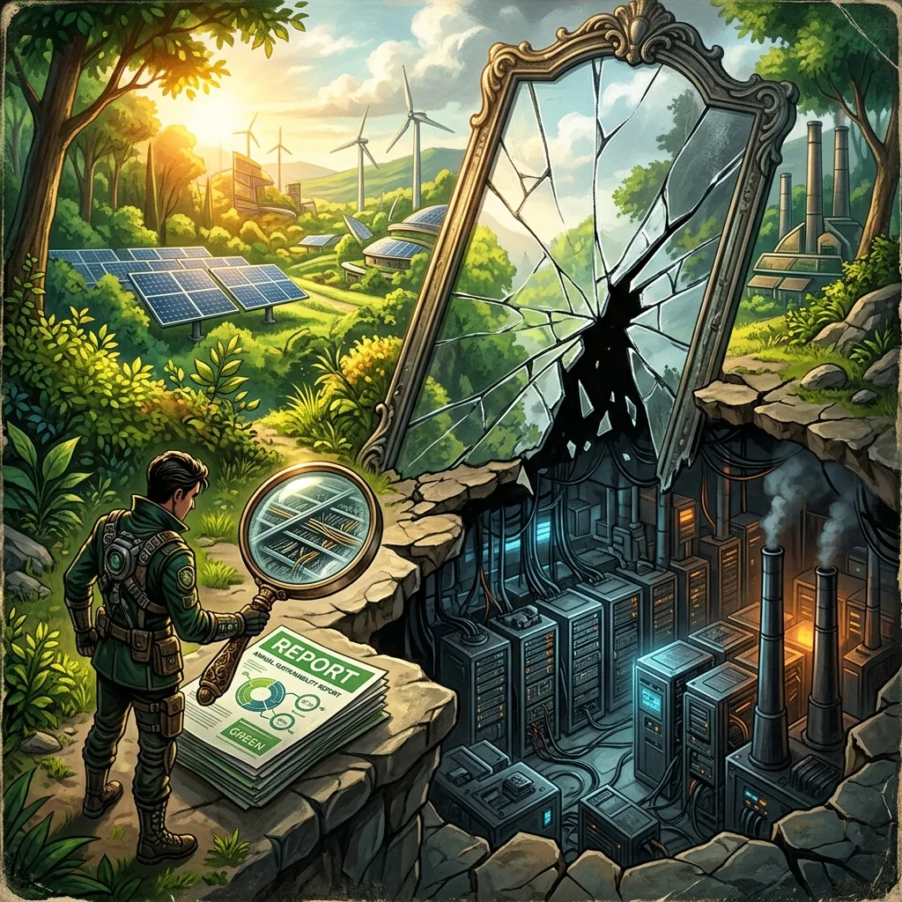

« "Un rapport de durabilité d'entreprise est un document dans lequel une organisation explique avec soin comment elle mesure ses progrès vers des objectifs qu'elle a elle-même définis, selon des méthodologies qu'elle a elle-même choisies, vérifiées par des auditeurs qu'elle a elle-même mandatés."Observation d'un analyste spécialisé en reporting ESG »

Amsterdam, siège européen d'une grande entreprise technologique. Printemps 2026.
La salle de conférence est lumineuse, avec vue sur les canaux. Sur l'écran, les graphiques sont tous verts, toutes les courbes descendent dans le bon sens. Le directeur RSE présente avec une conviction manifeste les résultats de l'année écoulée. Émissions en baisse de 12%. Part des énergies renouvelables montée à 78%. Consommation d'eau par mégawatt-heure réduite de 9%. L'objectif de neutralité carbone 2030 reste dans les clous.
Dans le couloir, à quelques mètres de la salle, Marta Kowalski attend. Elle est chercheuse en durabilité numérique à l'Université Technique de Delft et elle a passé les six derniers mois à tenter de vérifier de manière indépendante les chiffres que son interlocuteur est en train de présenter aux journalistes invités. Elle a rencontré des obstacles méthodologiques qu'elle qualifiera plus tard, avec la précision tempérée des universitaires, de considérables.
Elle n'accuse personne de mentir. Ce serait trop simple. Ce qu'elle a trouvé, c'est quelque chose de plus difficile à saisir et, en un sens, de plus troublant : une forme de vérité sélective. Des chiffres exacts dans le périmètre choisi. Un périmètre choisi pour être favorable. Et une absence totale de mauvaise foi apparente chez les personnes qui ont construit ce rapport, ce qui est peut-être la partie la plus inquiétante.
Ce chapitre est consacré à cette zone grise. Entre ce que l'industrie numérique déclare et ce que les mesures indépendantes révèlent. Entre les progrès réels et la communication qui les habille. Entre l'ambition sincère et les structures d'incitation qui la distordent. Et, en contrepoint, quelques signaux véritablement encourageants qui émergent des matériaux de la physique fondamentale.
Le grand écart entre bilan déclaré et bilan réel
Il y a un chiffre que les grandes entreprises technologiques n'aiment pas mentionner dans leurs rapports de durabilité. En 2023, Google a publié ses données d'émissions de CO2 avec une transparence inhabituelle. Ses émissions totales avaient augmenté de 48% entre 2019 et 2023. Pas diminué. Augmenté. Microsoft a publié des données similaires : ses émissions de CO2 équivalent avaient progressé de 29% entre 2020 et 2023.
Ces chiffres coexistent dans les mêmes documents avec des engagements de neutralité carbone d'ici 2030 pour l'un et de négativité carbone d'ici 2030 pour l'autre. Ce n'est pas une contradiction que les entreprises cherchent à cacher : elles l'expliquent, invoquent la croissance rapide de leurs activités IA comme facteur exceptionnel, et maintiennent que leur trajectoire de décarbonation reste valide à long terme. Mais la coexistence de ces deux informations dans le même rapport mérite qu'on s'y arrête.
Pour comprendre comment cela est possible, il faut entrer dans la machinerie comptable qui sous-tend tout bilan carbone d'entreprise.
Les trois scopes et l'art du périmètre
Le langage dominant de la comptabilité carbone en entreprise est celui du Greenhouse Gas Protocol, un standard élaboré dans les années 2000 par un consortium d'organisations internationales. Il découpe les émissions en trois catégories appelées scopes.
Le scope 1 couvre les émissions directes de l'entreprise : le gaz brûlé dans ses propres installations, le carburant de sa flotte de véhicules, les fluides frigorigènes qui s'échappent de ses climatiseurs. Pour une entreprise tech sans usines lourdes ni flotte importante, c'est généralement le poste le plus faible.
Le scope 2 couvre les émissions liées à l'électricité et la chaleur achetées. C'est la catégorie sur laquelle les engagements des entreprises tech portent le plus souvent : en achetant des certificats d'énergie renouvelable ou en signant des contrats d'approvisionnement direct avec des producteurs solaires ou éoliens, une entreprise peut ramener son scope 2 comptable à zéro. Ce qui ne veut pas dire que l'électricité qu'elle consomme à cet instant T ne provient pas d'une centrale au charbon, mais c'est une autre question.
Le scope 3 couvre tout le reste : les émissions générées par la fabrication des équipements que l'entreprise achète, par les déplacements de ses employés, par l'utilisation de ses produits par ses clients, par sa chaîne d'approvisionnement en amont et en aval. Pour une entreprise technologique, ce poste représente généralement entre 70 et 90% de l'empreinte carbone totale.
Dire qu'on est neutre en carbone sur les scopes 1 et 2, c'est l'équivalent de déclarer qu'on n'utilise plus de plastique dans son bureau tout en gérant une usine de production de plastique. L'intention est peut-être sincère. La communication est structurellement trompeuse.
Or le scope 3 est précisément le périmètre le moins bien mesuré, le moins bien vérifié et le moins bien couvert par les engagements. La raison en est pratique : les données nécessaires pour calculer les émissions scope 3 dépendent de centaines de fournisseurs, de comportements d'utilisateurs et de chaînes logistiques complexes que l'entreprise ne contrôle pas et ne peut pas mesurer directement. Il faut utiliser des estimations, des moyennes sectorielles, des modèles. Le résultat est une incertitude de mesure qui peut atteindre un facteur deux ou trois.
La fabrication d'un serveur représente, selon les études de cycle de vie disponibles, entre 50 et 80% de son empreinte carbone totale sur sa durée de vie entière. Dit autrement : la majorité de l'impact environnemental d'un data center se produit avant même que le premier bit de données soit traité. Pourtant, les engagements de neutralité carbone des opérateurs de data centers portent presque exclusivement sur la phase d'opération, c'est-à-dire sur les 20 à 50% restants.
Émissions Google (2019 à 2023) +48% publiées par Google dans son rapport durabilité 2023
Émissions Microsoft (2020 à 2023) +29% publiées par Microsoft dans son rapport durabilité 2023
Part du scope 3 dans l'empreinte tech 70 à 90% selon les études de cycle de vie indépendantes
Fabrication d'un serveur vs usage 50 à 80% de l'empreinte se produit avant la mise en service
Les certificats d'énergie renouvelable : ce qu'ils font et ce qu'ils ne font pas
L'instrument le plus largement utilisé pour décarboner comptablement le scope 2 est ce qu'on appelle en Europe les Garanties d'Origine (GO) et aux États-Unis les Renewable Energy Certificates (REC). Le principe est simple : quand un producteur d'énergie renouvelable injecte un mégawattheure sur le réseau, il reçoit un certificat qui atteste de cet acte. Ce certificat peut être vendu séparément de l'électricité elle-même à un consommateur qui veut compenser sa propre consommation d'électricité non renouvelable.
L'acheteur de ce certificat peut comptabiliser le mégawattheure correspondant comme renouvelable dans son bilan, même si, physiquement, l'électricité qu'il consomme à cet instant T provient d'une centrale au charbon en Pologne.
Les défenseurs de ce système font valoir que l'achat de ces certificats finance quand même la production renouvelable et contribue à son développement. C'est partiellement vrai. Les critiques font valoir que le découpage entre le certificat et l'électricité physique crée une fiction comptable qui n'a aucun effet sur les émissions réelles au moment de la consommation. C'est aussi partiellement vrai.
La distinction que Google a eu le mérite de formuler clairement, avec son objectif 24/7 carbon-free décrit dans le chapitre précédent, est celle-ci : ce qui compte d'un point de vue climatique, ce n'est pas la moyenne annuelle mais la correspondance temporelle et géographique. Un kilowattheure consommé à trois heures du matin en hiver dans un data center de Finlande ne peut pas être comptabilisé comme vert parce qu'on a acheté en juillet un certificat correspondant à de l'électricité solaire produite en Espagne.
Cette distinction, intuitivement évidente, est encore ignorée par la grande majorité des entreprises qui communiquent sur leur neutralité carbone.
L'anatomie du greenwashing et de ses zones grises
Je veux prendre soin de distinguer plusieurs catégories de ce qu'on appelle communément greenwashing, parce que les mettre dans le même sac produit une accusation indifférenciée qui n'aide pas à comprendre ce qui se passe réellement.
Ce qui est du greenwashing caractérisé
Il existe des pratiques qui méritent pleinement le terme. La compensation carbone de mauvaise qualité est la plus documentée. Des entreprises achètent des crédits carbone correspondant à la préservation de forêts qui n'étaient de toute façon pas menacées, ou à des projets de distribution d'ampoules basse consommation dont l'impact réel ne correspond pas aux crédits vendus. Une enquête publiée par le Guardian et plusieurs partenaires en 2023 a montré que plus de 90% des crédits de forêts tropicales certifiés par Verra, le principal certificateur mondial, étaient des 'crédits fantômes' sans impact réel vérifiable. Plusieurs grandes entreprises tech avaient basé une partie de leurs revendications de neutralité carbone sur ces crédits.
L'annonce d'objectifs ambitieux sans plan crédible est une autre forme caractérisée. Annoncer la neutralité carbone en 2030 sans disposer en 2026 d'une feuille de route technique détaillée sur la manière d'y parvenir, sans budget alloué spécifiquement, sans mécanisme de suivi indépendant, c'est faire de la communication future sans engagement présent. La différence avec un engagement sérieux est mesurable : un engagement sérieux se traduit par des changements dans les décisions d'achat, les contrats fournisseurs, les spécifications produits, immédiatement, pas seulement dans les rapports annuels.
Ce qui est simplification légitime
Il y a cependant une zone moins sombre. Communiquer sur des progrès réels mais partiels, sans mentionner les aspects moins favorables, n'est pas nécessairement de la mauvaise foi délibérée. Toute communication simplifie. La question est de savoir si la simplification crée une impression fausse chez un lecteur raisonnablement attentif.
Une entreprise qui annonce avoir atteint 100% d'énergies renouvelables, entendu comme 100% de certificats achetés correspondant à sa consommation annuelle, ne ment pas sur le chiffre. Elle simplifie sur la signification. Un lecteur non averti peut croire que l'électricité physique qui alimente ses serveurs est verte. Elle ne l'est pas nécessairement. Mais l'entreprise n'a pas dit cela.
Cette zone de simplification mérite la régulation, pas nécessairement la condamnation morale. L'étiquetage obligatoire avec des définitions normalisées et vérifiables indépendamment résoudrait une grande partie de ces ambiguïtés.
Ce qui est ambition sincère avec délais sous-estimés
Il y a enfin une troisième catégorie, que j'ai tendance à considérer comme la plus courante dans l'industrie tech américaine et européenne. Des équipes RSE travaillent sérieusement, disposent de budgets croissants, ont convaincu leurs directions générales que la durabilité est un enjeu stratégique. Elles fixent des objectifs ambitieux parce que c'est ce que les investisseurs, les clients et les régimes réglementaires attendent. Elles sous-estiment systématiquement la difficulté à cause d'un biais optimiste que les humains ont en général sur leurs capacités futures.
Quand Microsoft annonce en 2020 qu'elle sera carbone négative en 2030, la direction générale y croit probablement. Ce qu'elle ne mesure pas bien en 2020, c'est l'accélération des déploiements IA qui va multiplier sa consommation électrique d'un facteur plusieurs dans les quatre années suivantes. Personne ne l'avait prévue avec cette précision. Ce n'est pas du mensonge. C'est de la planification dans un contexte d'incertitude radicale.
La distinction entre mensonge délibéré, simplification commode et ambition mal calibrée n'est pas anecdotique. Elle détermine la réponse appropriée : la première appelle la sanction, la deuxième la régulation, la troisième le soutien méthodologique et la transparence forcée.
Le cycle de vie des équipements : la moitié oubliée
Il y a une expérience de pensée simple qui illustre un angle mort majeur du débat sur l'impact environnemental du numérique. Imaginez deux data centers strictement identiques en termes de consommation électrique opérationnelle. L'un renouvelle ses serveurs tous les trois ans, achetant systématiquement les modèles les plus récents et les plus performants. L'autre fait durer ses équipements dix ans, acceptant une performance inférieure mais évitant neuf années de fabrication de serveurs de remplacement. Si les deux data centers sont alimentés par la même électricité renouvelable, lequel a l'empreinte environnementale la plus faible ?
La réponse est évidente. Et pourtant, la question du cycle de vie des équipements est presque absente des rapports RSE de l'industrie tech.
La fabrication d'un GPU : un voyage à travers la chimie des terres rares
Un GPU de dernière génération comme ceux qui équipent les data centers IA en 2026 contient plusieurs dizaines de matériaux différents. Le processus de fabrication mobilise des équipements de lithographie qui consomment des centaines de kilowatts. Les salles blanches doivent être maintenues en température, pression et propreté extrêmes en permanence. Les produits chimiques utilisés pour graver, déposer et nettoyer les couches successives du circuit sont en partie des gaz à effet de serre puissants.
L'empreinte carbone de fabrication d'un GPU H100 n'est pas publiée par Nvidia. Les estimations disponibles dans la littérature académique et industrielle, basées sur des méthodes de cycle de vie appliquées à des puces comparables, suggèrent des valeurs de l'ordre de plusieurs centaines de kilogrammes de CO2 équivalent par unité, auxquelles s'ajoutent les émissions liées aux matériaux critiques, au transport et à l'assemblage des systèmes complets.
Un système GB200 de Nvidia, qui assemble plusieurs dizaines de GPU avec leur infrastructure de connexion et de refroidissement en un supercalculateur de 1,36 tonne comprenant 1,2 million de pièces, représente un investissement en carbone de fabrication considérable. Ce chiffre n'est pas public. Il ne figure dans aucun rapport de durabilité. Et c'est précisément parce qu'il est inclus dans le scope 3, ce périmètre que personne ne mesure bien.
La durée de vie comme levier négligé
La durée de vie moyenne d'un serveur dans un data center commercial était de cinq à sept ans dans les années 2010. Elle a eu tendance à raccourcir dans les data centers IA, certains opérateurs renouvelant leurs GPU tous les deux à trois ans pour rester à la pointe des performances.
Cette accélération est compréhensible économiquement : un GPU de dernière génération peut offrir cinq à dix fois plus de performance par watt que le modèle de trois ans qu'il remplace. Si le coût du compute est le facteur limitant du business, le renouvellement rapide est rationnel du point de vue de l'opérateur. Il est désastreux du point de vue de l'empreinte environnementale globale.
Des recherches menées par des groupes comme le Shift Project en France ont montré que faire passer la durée de vie moyenne d'un smartphone de deux ans à quatre ans réduirait son empreinte carbone totale de 40 à 50%. Le même calcul s'applique aux serveurs, avec des ordres de grandeur plus importants par unité mais des volumes plus faibles. L'allongement de la durée de vie des équipements numériques est l'une des actions les plus efficaces par euro investi pour réduire l'impact environnemental du numérique. Et c'est aussi l'une des moins encouragées par les modèles économiques actuels de l'industrie.
Les déchets électroniques : cinquante millions de tonnes qui disparaissent
Le Global E-waste Monitor, publié sous l'égide des Nations Unies, estimait que le monde a généré environ 62 millions de tonnes de déchets électroniques en 2022 (62 Mt selon le Global E-waste Monitor 2024), avec une progression de 2 à 3 millions de tonnes par an. C'est le flux de déchets le plus rapidement croissant de la planète.
22,3% de ces déchets sont collectés et traités dans des filières formelles de recyclage. Le reste est soit stocké dans des garages et sous-sols chez les particuliers, soit exporté vers des pays en développement où il est démantelé de manière artisanale dans des conditions sanitaires et environnementales problématiques. Les filières informelles de recyclage au Ghana, au Nigeria, en Inde et en Chine exposent les travailleurs à des métaux lourds et des composants toxiques sans protection adéquate.
Les GPU et serveurs en fin de vie des data centers entrent dans ce flux. Certains grands opérateurs ont des programmes de recyclage structurés avec des partenaires certifiés. Mais ces programmes sont volontaires, leurs résultats sont rarement audités de manière indépendante, et ils ne couvrent pas l'ensemble du parc équipements.
Il y a une ironie supplémentaire dans la situation des métaux critiques contenus dans ces équipements. On extrait du cobalt en République Démocratique du Congo dans des conditions souvent terribles. On l'intègre dans des batteries et des circuits. On utilise ces équipements quelques années. On les jette dans des filières qui ne récupèrent pas le cobalt. Et on retourne extraire du cobalt en République Démocratique du Congo. La boucle n'est pas fermée. Elle pourrait l'être techniquement. Elle ne l'est pas économiquement, parce que l'extraction reste moins chère que le recyclage tant que les coûts environnementaux externalisent la plupart de leurs impacts négatifs.
Un kilogramme de cobalt recyclé d'une batterie en fin de vie a une empreinte carbone environ vingt fois plus faible qu'un kilogramme de cobalt extrait d'une mine congolaise. Tant que les deux se vendent au même prix sans prime pour l'origine, le marché n'a aucune raison de privilégier le second.
Le Green IT : de la rhétorique aux pratiques réelles
Le terme Green IT existe depuis les années 2000. Il a été tour à tour un label marketing, un domaine de recherche sérieux, une discipline professionnelle émergente et un sujet de conférence. En 2026, il est tout cela à la fois, dans des proportions qui varient selon les acteurs.
Ce qui fonctionne vraiment
Les progrès sur l'efficacité opérationnelle des data centers sont réels et documentables. Le PUE moyen des grands data centers hyperscale est passé de 1,8 à 2,0 dans les années 2010 à 1,1 à 1,3 pour les meilleures installations actuelles. Cette amélioration représente une réduction de 30 à 40% de l'énergie consacrée au refroidissement et à l'infrastructure pour chaque unité de calcul, ce qui n'est pas négligeable.
Les logiciels d'optimisation de la charge des serveurs ont progressé considérablement. Dans un data center mal géré, les serveurs tournent souvent à 20 à 30% de leur capacité en moyenne, consommant quasiment la même énergie à vide qu'à pleine charge. Les outils modernes de virtualisation et d'orchestration permettent de consolider les charges, d'éteindre les serveurs sous-utilisés la nuit et les week-ends, et d'atteindre des taux d'utilisation de 60 à 80% pour les opérateurs les plus performants.
L'intégration de l'IA dans la gestion des data centers eux-mêmes produit des résultats mesurables. Google a publié en 2016 une étude montrant que des algorithmes de DeepMind appliqués à la gestion du refroidissement de ses data centers avaient réduit la consommation d'énergie du refroidissement de 40%. Des expériences similaires menées depuis par d'autres opérateurs ont produit des résultats dans une fourchette de 10 à 30% de réduction. Ce sont des gains réels, vérifiables, reproductibles.
La maintenance prédictive comme modèle
L'application la plus mature de l'IA à la durabilité du secteur énergétique est sans doute la maintenance prédictive des installations renouvelables. Le principe est simple à comprendre : une éolienne équipée de centaines de capteurs (vibration des roulements, température des composants, déformation des pales, puissance générée) produit en continu un flux de données qui peut être analysé par un modèle de son comportement physique. Ce modèle détecte des déviations subtiles, un roulement qui vibre de manière imperceptible différemment de la normale, une pale dont la signature aérodynamique évolue légèrement, qui précède une défaillance de plusieurs semaines ou plusieurs mois.
Une intervention préventive, organisée dans les conditions optimales de météo et de disponibilité des techniciens, coûte cinq à dix fois moins cher qu'une intervention d'urgence après une panne. Et la disponibilité de l'installation, c'est-à-dire le pourcentage du temps où elle produit effectivement de l'électricité, progresse de plusieurs points de pourcentage. Pour un parc offshore de grande taille dont chaque mégawattheure non produit est de l'argent perdu, ces gains sont directement mesurables dans les comptes de l'opérateur.
En 2026, 65% des entreprises du secteur de l'énergie utilisent des formes d'IA pour la maintenance prédictive. Les jumeaux numériques d'installations, ces répliques virtuelles alimentées en temps réel par les données des capteurs physiques, connaissent une croissance de 20% par an. Le marché mondial de l'IA appliquée au secteur énergétique dépasse 26 milliards de dollars. Ce n'est plus de l'expérimentation. C'est de l'industrie.
Ce qui reste largement rhétorique
L'éco-conception logicielle est peut-être l'exemple le plus criant du décalage entre la promesse et la pratique. L'idée est simple : le code que les développeurs écrivent a un impact énergétique. Un algorithme inefficace qui fait le même travail en dix fois plus d'opérations consomme dix fois plus d'électricité. Les compilateurs, les choix de langage de programmation, les structures de données, les requêtes de base de données, tout cela a une empreinte énergétique. Des formations existent, des outils de mesure existent, des guides de bonnes pratiques existent.
Ils sont rarement utilisés. La raison est économique : le temps d'un développeur coûte cher. L'électricité consommée par le code qu'il écrit ne lui est pas facturée directement. Et les outils de mesure de l'impact énergétique du code ne sont pas intégrés dans les environnements de développement standard. Optimiser la performance énergétique d'un service logiciel demande du temps, des compétences et une culture organisationnelle qui valorise cet objectif. Les trois sont rares.
Des pionniers existent. La BBC a publié une étude mesurant l'empreinte carbone de différentes versions de son application de streaming et l'a utilisée pour guider des décisions d'architecture. Plusieurs grandes entreprises web ont publié des outils de mesure de l'empreinte de leurs pages web. Mais ces initiatives restent marginales par rapport au volume de code produit quotidiennement dans le monde, dont l'immense majorité ne fait l'objet d'aucune considération énergétique.
Le paradoxe de l'IA climatique
Il y a une tension intellectuelle dans ce chapitre que je dois nommer directement plutôt que de la laisser implicite. L'IA est simultanément l'une des sources les plus dynamiques de croissance de la consommation énergétique mondiale et l'un des outils les plus prometteurs pour gérer cette énergie avec plus d'intelligence. Ces deux vérités coexistent, et les tenir ensemble sans réduire la réalité à l'une ou l'autre est plus difficile qu'il n'y paraît.
Ce que l'IA peut faire pour le climat
Les applications climatiques de l'IA qui fonctionnent, documentées et déployées en 2026, sont plus nombreuses et plus impactantes qu'une lecture pessimiste du sujet le laisserait croire.
La prévision de la production renouvelable est peut-être l'application la plus mature. Les modèles d'apprentissage automatique entraînés sur des décennies de données météo et de production d'installations existantes atteignent des précisions de prévision à court terme (12 à 72 heures) nettement supérieures aux modèles numériques classiques. Google DeepMind a publié en 2019 des résultats montrant une amélioration de 20% de la valeur économique de la production éolienne grâce à une meilleure prévision, ce qui se traduit par moins de mise en réserve de capacités fossiles pour compenser l'intermittence.
L'optimisation de la gestion des réseaux électriques est un domaine où l'IA commence à produire des résultats tangibles. Des algorithmes d'optimisation en temps réel permettent de mieux utiliser les capacités existantes, de réduire les congestions, d'intégrer plus de production renouvelable sans déstabiliser la fréquence du réseau. Des études menées sur des réseaux pilotes en Allemagne et aux Pays-Bas suggèrent des réductions de pertes en ligne de 5 à 15% et une augmentation de la pénétration renouvelable possible de plusieurs points de pourcentage.
La découverte de matériaux est un domaine où le potentiel est immense et où les premières réalisations commencent à émerger. Des modèles entraînés sur des bases de données de structures cristallines et de propriétés de matériaux peuvent proposer de nouveaux candidats pour des batteries à haute densité énergétique, des catalyseurs pour la production d'hydrogène vert ou des matériaux supraconducteurs à température plus élevée. Ce qui prenait des années de travail expérimental peut maintenant être pré-filtré en quelques heures de calcul, même si la validation expérimentale reste nécessaire.
La modélisation climatique bénéficie d'une accélération significative. Des modèles d'IA entraînés sur des sorties de modèles climatiques classiques peuvent reproduire leurs résultats en une fraction du temps de calcul, permettant d'explorer des espaces de scénarios beaucoup plus larges. Cela améliore la compréhension des incertitudes et permet de mieux évaluer les risques sous différents scénarios d'émission.
La question de proportionnalité
La question honnête à se poser est celle de la proportionnalité. L'électricité supplémentaire consommée par les applications IA dédiées à la lutte climatique est-elle compensée par les gains qu'elles produisent ?
Pour certaines applications, la réponse est clairement oui. Si un système d'IA consomme cent mégawattheures par an pour améliorer la prévision de production d'un parc éolien de 500 mégawatts et que cette amélioration permet d'économiser l'équivalent de 10 000 mégawattheures de production fossile de secours, le bilan est largement positif.
Mais la question devient beaucoup plus difficile quand on élargit le périmètre. L'IA qui optimise la logistique d'Amazon en réduisant les kilomètres parcourus est-elle climatiquement bénéfique si elle contribue par ailleurs à augmenter le volume global de commandes ? L'IA qui améliore l'efficacité énergétique des moteurs de recherche est-elle neutre si elle contribue à une augmentation de l'usage de ces moteurs ? Le paradoxe de Jevons traverse aussi la question climatique.
Il n'y a pas de réponse simple à ces questions. Ce qu'on peut dire avec certitude, c'est que le bilan global de l'IA sur le climat dépendra très largement des usages qui seront prioritaires, des réglementations qui encadreront ces usages et des signaux prix qui orienteront les décisions d'investissement. Ce sont des choix politiques, pas des conséquences technologiques inéluctables.
L'IA est un amplificateur. Elle amplifie ce qu'on lui demande d'amplifier. Si on lui demande d'optimiser la consommation énergétique, elle le fait avec une efficacité remarquable. Si on lui demande de maximiser l'engagement publicitaire, elle le fait aussi avec une efficacité remarquable. Le bilan climatique de l'IA sera le reflet direct des priorités collectives qui guideront son déploiement.
Les frontières de la physique : spintronique et nouvelles architectures
Jusqu'ici, ce chapitre a examiné l'impact environnemental de l'IA avec une focale sur les pratiques de communication et de gestion existantes. Il serait incomplet sans mentionner un horizon plus lointain mais plus radical : les changements qui pourraient survenir si les architectures fondamentales du calcul informatique évoluent.
Il y a dans la physique de la matière condensée des directions de recherche dont les implications énergétiques, si elles se concrétisent, seraient d'un ordre de grandeur différent de tout ce que les améliorations incrémentales de l'efficacité des puces actuelles peuvent promettre.
Le problème fondamental : l'effet Joule
Tous les circuits électroniques actuels fonctionnent sur le même principe de base : des électrons se déplacent dans des conducteurs sous l'effet d'un champ électrique. Ce déplacement rencontre une résistance (au sens physique du terme), et cette résistance dissipe de l'énergie sous forme de chaleur. C'est l'effet Joule, découvert au XIXe siècle et qui n'a pas changé d'un atome depuis lors.
Plus les transistors sont petits et plus ils sont nombreux sur une puce, plus la densité de puissance dissipée par unité de surface augmente. À 3 nanomètres, les puces actuelles dissipent des densités de puissance qui se mesurent en centaines de watts par centimètre carré, comparables aux flammes d'un moteur de fusée. La solution actuelle est le refroidissement : on évacue cette chaleur avec des ventilateurs, des liquides caloporteurs, des systèmes thermiques de plus en plus élaborés. C'est précisément ce que nous avons décrit dans les chapitres précédents comme l'un des principaux postes de consommation énergétique des data centers.
La question que se posent les physiciens des matériaux depuis plusieurs décennies est la suivante : peut-on concevoir des composants électroniques qui traitent l'information sans déplacer des charges électriques, donc sans générer de chaleur par effet Joule ? La réponse théorique est oui. La réponse pratique est : pas encore, mais on approche.
Les isolants topologiques : conduire sans perdre
En 2005, deux physiciens, Charles Kane et Eugene Mele, ont prédit théoriquement l'existence d'une nouvelle classe de matériaux avec des propriétés électroniques remarquables. Ces matériaux, appelés isolants topologiques, sont isolants à l'intérieur de leur volume mais conducteurs à leur surface, exactement comme une coquille conductrice autour d'un isolant. Jusqu'ici, rien d'extraordinaire.
Ce qui est extraordinaire, c'est la nature de cette conduction de surface. Les électrons qui circulent en surface ont leur spin (une propriété quantique qui peut être vue comme une rotation intrinsèque de la particule) verrouillé perpendiculairement à leur direction de mouvement. Cette relation rigide entre spin et direction de propagation a une conséquence physique profonde : ces électrons ne peuvent pas faire demi-tour. La rétrodiffusion, c'est-à-dire le rebond d'un électron sur un obstacle qui lui fait perdre son énergie cinétique et génère de la chaleur, est interdite par les règles de la mécanique quantique dans ce type de conduction.
En d'autres termes : dans un isolant topologique, les électrons de surface se déplacent sans dissipation d'énergie. Sans effet Joule. Les mesures expérimentales de cette propriété ont commencé en 2007 et ont été récompensées par le prix Nobel de physique en 2016, attribué à David Thouless, Duncan Haldane et Michael Kosterlitz pour leurs travaux théoriques sur les phases topologiques de la matière.
Si on pouvait exploiter cette propriété pour faire circuler les signaux dans les circuits électroniques, on éliminerait le principal mécanisme de dissipation d'énergie. La consommation des composants de traitement de l'information serait réduite de plusieurs ordres de grandeur. Un processeur construit sur ce principe pourrait théoriquement consommer mille fois moins d'énergie qu'un processeur silicium équivalent pour le même nombre d'opérations.
La spintronique : utiliser le spin comme variable d'information
La spintronique est une discipline plus large qui consiste à utiliser non pas la charge de l'électron (comme dans l'électronique classique) mais son spin comme variable pour stocker et traiter l'information. L'avantage est que le renversement du spin nécessite beaucoup moins d'énergie que le déplacement d'une charge dans un conducteur.
Les premières applications commerciales de la spintronique existent depuis les années 1990 avec les têtes de lecture des disques durs, qui utilisent un effet quantique (la magnétorésistance géante, elle aussi nobélisée en 2007) pour lire les données magnétiques. Mais les applications récentes sont beaucoup plus ambitieuses.
La STT-MRAM (Spin-Transfer Torque Magnetic RAM) est le premier exemple d'une mémoire entièrement spintronique en production commerciale. Elle stocke l'information dans l'orientation du spin d'une couche magnétique, qui peut être retournée par un courant d'électrons polarisés en spin. Les avantages par rapport aux mémoires flash conventionnelles sont significatifs : vitesse d'écriture supérieure, endurance en cycles bien meilleure, et surtout conservation de l'information sans alimentation (comme la flash, mais plus rapide). Les applications actuelles couvrent les mémoires embarquées dans les microcontrôleurs automobile et les appareils IoT. C'est une technologie déployée, pas une promesse de laboratoire.
La SOT-MRAM (Spin-Orbit Torque MRAM) est la génération suivante, plus rapide encore et potentiellement plus efficace énergétiquement. Des prototypes avancés existent chez TSMC et Samsung. L'horizon de déploiement commercial est estimé entre 2027 et 2029 pour des applications de type cache L3 dans les processeurs hautes performances. Si cela se concrétise, une partie de la mémoire on-chip la plus énergivore des puces IA pourrait être remplacée par une technologie qui consomme significativement moins.
Technologie État en 2026 Impact potentiel
STT-MRAM Commercialisée Remplace Flash/EEPROM en embarqué
SOT-MRAM Prototypes avancés Remplace cache L3 (SRAM) : horizon 2027-2029
Spin-Memristor Démonstrateurs IA embarquée ultra-sobre : horizon 2030+
Magnonique Recherche fondamentaleFin de l'effet Joule dans les puces : horizon 2035+
Les memristors et l'informatique neuromorphique
Le memristor est un composant électronique dont la résistance dépend de l'historique du courant qui l'a traversé. C'est en quelque sorte une mémoire analogique de la résistance. Cette propriété est remarquablement analogue au comportement d'une synapse neuronale, dont la conductivité dépend de l'historique des signaux qui l'ont traversée.
Des chercheurs de TDK et du CEA (Commissariat à l'Énergie Atomique, le centre de recherche technologique français) ont présenté des démonstrateurs de Spin-Memristors, des memristors dont le mécanisme de mémorisation est basé sur le spin plutôt que sur une modification structurelle du matériau. L'avantage est une endurance en cycles considérablement améliorée et une consommation d'énergie par opération de mémorisation réduite.
L'application visée est l'IA embarquée ultra-sobre, des circuits de reconnaissance de formes ou de prise de décision qui fonctionnent directement sur des capteurs, des appareils médicaux implantables, des dispositifs autonomes alimentés par des batteries de faible capacité. Pour ce type d'application, la consommation actuelle des puces conventionnelles est souvent le facteur limitant. Les Spin-Memristors pourraient changer l'équation.
La magnonique : le bout du chemin
La magnonique est le domaine de recherche le plus fondamental de ce panorama, et probablement celui dont l'impact sera le plus tardif mais le plus radical si les promesses expérimentales se confirment.
Un magnon est le quantum d'une onde de spin dans un matériau magnétique, de la même manière qu'un photon est le quantum d'une onde électromagnétique. Propager un magnon dans un matériau magnétique ne nécessite pas de déplacement de charges : c'est une perturbation collective de l'orientation des spins qui se propage comme une vague. En théorie, si on peut coder l'information dans des magnons et la traiter par des opérations sur ces magnons, on peut faire de l'informatique sans aucun déplacement de charge, donc sans aucun effet Joule.
Les expérimentations en magnonique sont encore largement confinées aux laboratoires. Les fréquences de fonctionnement atteintes sont dans la gamme des gigahertz à terahertz, ce qui est adapté aux applications de traitement du signal. Les longueurs d'onde des magnons permettent des dispositifs très compacts. Mais la fabrication reproductible de circuits magnoniques fonctionnels reste un défi de recherche considérable.
L'horizon de déploiement industriel de la magnonique est réaliste autour de 2035, peut-être plus tard. Ce n'est pas la solution aux problèmes de la prochaine décennie. Mais c'est une indication que les lois de la physique n'ont pas dit leur dernier mot sur la question de l'efficacité énergétique du calcul. Il existe des voies qui permettraient, si la recherche porte ses fruits, de réduire la consommation des circuits de calcul d'un facteur mille par rapport aux technologies actuelles. Cela changerait tous les calculs de ce livre.
Les isolants topologiques et la magnonique nous rappellent quelque chose que l'histoire de la physique enseigne régulièrement : les ruptures technologiques les plus profondes viennent souvent de phénomènes fondamentaux découverts dans des laboratoires académiques, sans application pratique immédiatement évidente, et qui mettent vingt à trente ans à transformer l'industrie. En attendant ces ruptures, les tensions décrites dans les chapitres précédents sont réelles et immédiates.
Vers une transparence obligatoire : ce que la régulation peut faire
Le tableau dressé dans ce chapitre mène à une conclusion qui me semble difficile à contester : les mécanismes de marché actuels ne produisent pas spontanément la transparence environnementale nécessaire pour que les décisions des acteurs économiques, investisseurs, consommateurs, pouvoirs publics, soient basées sur une information fiable.
Les entreprises qui investissent dans une meilleure mesure et une meilleure communication de leur impact environnemental ne sont pas récompensées par le marché proportionnellement à cet effort. Souvent, elles sont pénalisées par la comparaison avec des concurrents qui se contentent de déclarations vagues et non vérifiables.
Les initiatives réglementaires en cours
L'Union européenne a adopté en 2023 la directive CSRD (Corporate Sustainability Reporting Directive) qui impose à un large périmètre d'entreprises européennes de publier des rapports de durabilité détaillés selon des standards normalisés et vérifiés par des auditeurs indépendants. Pour les entreprises numériques, cela implique en principe de rendre compte de leur consommation énergétique, de leur empreinte carbone sur les trois scopes, de leur consommation d'eau et de leur production de déchets électroniques.
Les premiers rapports CSRD commencent à être publiés en 2025-2026 par les entreprises les plus grandes. L'exercice met en lumière à la fois la difficulté de la mesure (beaucoup de données ne sont pas disponibles dans les formes requises) et la réalité des progrès possibles quand une obligation de transparence existe.
En France, le label Numérique Responsable développé par l'AFNOR et INR (Institut du Numérique Responsable) propose un référentiel d'évaluation des pratiques environnementales des organisations numériques. C'est un outil volontaire, ce qui en limite la portée, mais son existence contribue à faire progresser les pratiques dans les organisations qui l'adoptent.
Les discussions européennes sur un étiquetage énergétique des services numériques, analogue aux étiquettes A à G sur les appareils électroménagers, avancent lentement. L'idée est simple : afficher, pour chaque service numérique, une estimation de sa consommation énergétique et de son empreinte carbone par heure d'utilisation. Cette information permettrait aux utilisateurs de faire des choix éclairés et inciterait les éditeurs de services à optimiser leur empreinte pour obtenir un meilleur score.
Ce que l'étiquetage changerait
Il serait naïf de penser qu'un étiquetage énergétique des services numériques suffira à transformer les comportements de masse. Les étiquettes énergie sur les électroménagers n'ont pas mis fin à la vente d'appareils énergivores. Mais elles ont orienté les achats, stimulé l'innovation vers les meilleures classes et rendu le sujet visible pour des millions de personnes qui n'y pensaient pas.
Pour les acheteurs institutionnels, en revanche, un étiquetage normalisé et vérifiable aurait un effet bien plus direct. Une entreprise qui doit justifier ses achats de services cloud auprès d'un service RSE de plus en plus exigeant choisira, à performance équivalente, le service dont l'empreinte est la plus facilement documentable et la plus faible. Les appels d'offres publics pourraient intégrer des critères environnementaux vérifiables. Les assureurs et les investisseurs pourraient mieux évaluer les risques de réputation associés à des pratiques insuffisantes.
La transparence n'est pas une fin en soi. Elle est la condition de possibilité de toutes les autres formes de progrès. On ne peut pas progresser vers un objectif qu'on ne mesure pas. Et on ne peut pas mesurer ce qu'on s'est donné la peine de ne pas regarder.
Notes et sources du chapitre 6
• Émissions Google +48% (2019-2023) : Google Environmental Report 2024.
• Émissions Microsoft +29% (2020-2023) : Microsoft Sustainability Report 2024.
• Enquête Verra/Guardian 90% crédits « fantômes » : The Guardian, Die Zeit, SourceMaterial, 18 janv. 2023.
• DeepMind 40% refroidissement data centers : blog Google / DeepMind, 20 juill. 2016 ; TechCrunch, 20 juill. 2016.
• PUE hyperscale (1,1-1,3) : Uptime Institute Global Data Center Survey 2024.
• DeepMind prévision éolienne +20% valeur : Google AI Blog, 2019.
• E-waste 62 Mt (2022) : Global E-waste Monitor 2024, UNITAR/ITU, mars 2024.
• Taux recyclage e-waste 22,3% : Global E-waste Monitor 2024.
• STT-MRAM production volume : MRAM-Info, 2025-2026 ; TSMC MRAM research.
• SOT-MRAM prototypes TSMC/Samsung : MRAM-Info ; Strategic Market Research 2026.
• CSRD adoptée 2023 : directive (UE) 2022/2464 ; Gibson Dunn, août 2023. Omnibus 2025 modifié scope et délais : ESG Dive, 27 fév. 2025.
• GB200 poids : The Register, HPE QuickSpecs (1,36 t).
Chapitre suivant :
La France, l'Europe et la souveraineté énergétique-numérique
Des atouts singuliers, des vulnérabilités tout aussi singulières